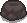

The Sad Onion
Tears up

The Sad Onion is a passive item that increases the player's tear rate, allowing them to shoot tears more frequently. It is often found in the first floor of the game and is a popular choice for players looking to enhance their offensive capabilities early on.